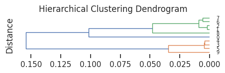
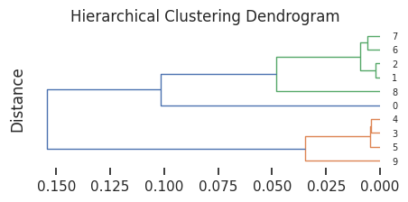
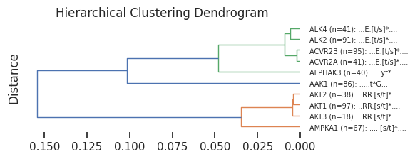
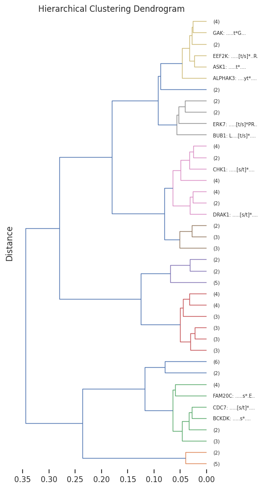

pssms = Data.get_pspa_all_scale()Hierarchical clustering
Setup
JS divergence
The Jensen-Shannon divergence between two probability distributions $ P $ and $ Q $ is defined as:
\[ \mathrm{JS}(P \| Q) = \frac{1}{2} \, \mathrm{KL}(P \| M) + \frac{1}{2} \, \mathrm{KL}(Q \| M) \]
where $ M = (P + Q) $ is the average (mixture) distribution, and $ $ denotes the Kullback–Leibler divergence:
\[ \mathrm{KL}(P \| Q) = \sum_{x \in \mathcal{X}} P(x) \log \left( \frac{P(x)}{Q(x)} \right) \]
Therefore,
\[ \mathrm{JS}(P \| Q) = \frac{1}{2} \sum_{x \in \mathcal{X}} P(x) \log \left( \frac{P(x)}{M(x)} \right) + \frac{1}{2} \sum_{x \in \mathcal{X}} Q(x) \log \left( \frac{Q(x)}{M(x)} \right) \]
js_divergence
js_divergence (p1, p2, mean=True)
p1 and p2 are two arrays (df or np) with index as aa and column as position
| Type | Default | Details | |
|---|---|---|---|
| p1 | pssm | ||
| p2 | pssm | ||
| mean | bool | True |
Let \(P_i(x)\) and \(Q_i(x)\) be the probability of amino acid \(x\) at position \(i\) in the two PSSMs, and define the average distribution:
\[ M_i(x) = \frac{1}{2} \left( P_i(x) + Q_i(x) \right) \]
Then the Jensen–Shannon divergence at position \(i\) is:
\[ \mathrm{JS}_i(P_i \| Q_i) = \frac{1}{2} \sum_{x} P_i(x) \log \left( \frac{P_i(x)}{M_i(x) + \varepsilon} \right) + \frac{1}{2} \sum_{x} Q_i(x) \log \left( \frac{Q_i(x)}{M_i(x) + \varepsilon} \right) \]
where \(\varepsilon = 10^{-8}\) is a small constant added for numerical stability.
If averaging across positions, the full divergence is:
\[ \mathrm{JS}(P \| Q) = \frac{1}{L} \sum_{i=1}^{L} \mathrm{JS}_i(P_i \| Q_i) \]
where \(L\) is the number of positions (i.e., columns in the PSSM).
# one example
pssm_df = recover_pssm(pssms.iloc[1])js_divergence(pssm_df,pssm_df)np.float64(9.999929889226068e-09)js_divergence_flat
js_divergence_flat (p1_flat, p2_flat)
p1 and p2 are two flattened pd.Series with index as aa and column as position
| Details | |
|---|---|
| p1_flat | pd.Series of flattened pssm |
| p2_flat | pd.Series of flattened pssm |
pssm_flat = pssms.iloc[1]pssm_flat-5P 0.02971
-5G 0.03443
-5A 0.04180
-5C 0.03500
-5S 0.04137
...
4D 0.04693
4E 0.04693
4pS 0.05155
4pT 0.05155
4pY 0.04319
Name: ACVR2A, Length: 230, dtype: float64js_divergence(pssm_flat,pssm_flat)np.float64(9.999929889226066e-08)get_1d_distance
get_1d_distance (df, func_flat)
Compute 1D distance for each row in a dataframe given a distance function
# return 1d distance matrix
get_1d_distance(pssms.head(),js_divergence_flat)100%|████████████████████████████████████████████████████████████████████| 5/5 [00:00<00:00, 288.92it/s]array([0.08286125, 0.08577978, 0.08798376, 0.08501009, 0.00215832,
0.07937984, 0.07066437, 0.08348296, 0.07361695, 0.0042525 ])get_1d_js
get_1d_js (df)
Compute 1D distance using JS divergence.
distance = get_1d_js(pssms.head(20))100%|███████████████████████████████████████████████████████████████████| 20/20 [00:00<00:00, 70.04it/s]Parallel computing to accelerate when flattened pssms are too many in a df:
get_1d_distance_parallel
get_1d_distance_parallel (df, func_flat, max_workers=4, chunksize=100)
Parallel compute 1D distance for each row in a dataframe given a distance function
get_1d_distance_parallel(pssms.head(),js_divergence_flat)get_1d_js_parallel
get_1d_js_parallel (df, func_flat=<function js_divergence_flat>, max_workers=4, chunksize=100)
Compute 1D distance matrix using JS divergence.
get_1d_js_parallel(pssms.head())get_Z
get_Z (pssms, func_flat=<function js_divergence_flat>, parallel=True)
Get linkage matrix Z from pssms dataframe
Z = get_Z(pssms.head(10),parallel=False)100%|██████████████████████████████████████████████████████████████████| 10/10 [00:00<00:00, 144.78it/s]Z[:5]array([[1.00000000e+00, 2.00000000e+00, 2.15831826e-03, 2.00000000e+00],
[3.00000000e+00, 4.00000000e+00, 4.25249802e-03, 2.00000000e+00],
[5.00000000e+00, 1.10000000e+01, 4.65130789e-03, 3.00000000e+00],
[6.00000000e+00, 7.00000000e+00, 5.89059774e-03, 2.00000000e+00],
[1.00000000e+01, 1.30000000e+01, 9.31412264e-03, 4.00000000e+00]])plot_dendrogram
plot_dendrogram (Z, color_thr=0.07, dense=7, line_width=1, **kwargs)
| Type | Default | Details | |
|---|---|---|---|
| Z | |||
| color_thr | float | 0.07 | |
| dense | int | 7 | the higher the more dense for each row |
| line_width | int | 1 | |
| kwargs | VAR_KEYWORD |
set_sns(100)plot_dendrogram(Z,dense=7,line_width=1)
plot_dendrogram(Z,dense=4)
pssm_to_seq
pssm_to_seq (pssm_df, thr=0.2, clean_center=True)
Represent PSSM in string sequence of amino acids
| Type | Default | Details | |
|---|---|---|---|
| pssm_df | |||
| thr | float | 0.2 | threshold of probability to show in sequence |
| clean_center | bool | True | if true, zero out non-last three values in position 0 (keep only s,t,y values at center) |
pssm_to_seq(pssm_df,thr=0.1)'...[E/D].[t/s]*[s/t]...'get_pssm_seq_labels
get_pssm_seq_labels (pssms, count_map=None, thr=0.2)
Use index of pssms and the pssm to seq to represent pssm.
| Type | Default | Details | |
|---|---|---|---|
| pssms | |||
| count_map | NoneType | None | df index as key, counts as value |
| thr | float | 0.2 | threshold of probability to show in sequence |
get_pssm_seq_labels(pssms.head(10))['AAK1: .....t*G...',
'ACVR2A: ...E.[t/s]*....',
'ACVR2B: ...E.[t/s]*....',
'AKT1: ..RR.[s/t]*....',
'AKT2: ..RR.[s/t]*....',
'AKT3: ..RR.[s/t]*....',
'ALK2: ...E.[t/s]*....',
'ALK4: ...E.[t/s]*....',
'ALPHAK3: ....yt*....',
'AMPKA1: .....[s/t]*....']import random# get a dict of index and counts
count_dict = {idx:random.randint(1,100) for idx in pssms.head(10).index}labels= get_pssm_seq_labels(pssms.head(10),count_dict)
labels['AAK1 (n=86): .....t*G...',
'ACVR2A (n=41): ...E.[t/s]*....',
'ACVR2B (n=95): ...E.[t/s]*....',
'AKT1 (n=97): ..RR.[s/t]*....',
'AKT2 (n=38): ..RR.[s/t]*....',
'AKT3 (n=18): ..RR.[s/t]*....',
'ALK2 (n=91): ...E.[t/s]*....',
'ALK4 (n=41): ...E.[t/s]*....',
'ALPHAK3 (n=40): ....yt*....',
'AMPKA1 (n=67): .....[s/t]*....']plot_dendrogram(Z,dense=4,labels=labels)
Full pipeline
# get distance matrix
pssms=pssms.head(100)
Z = get_Z(pssms)
# optional, get counts for each index
# count_dict = pssms.index.value_counts()
# get pssm to seq labels with counts
# labels= get_pssm_seq_labels(pssms,count_dict)
# or get pssm to seq labels only
labels= get_pssm_seq_labels(pssms)# plot dendrogram
plot_dendrogram(Z,dense=8,labels=labels,truncate_mode='lastp', p=40) # only show 40
# save
# save_pdf('dendrogram.pdf')